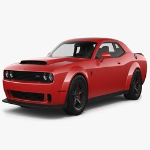
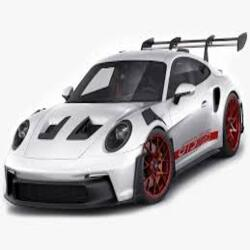
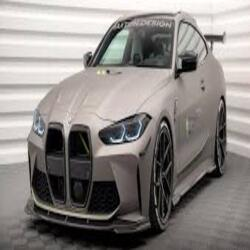
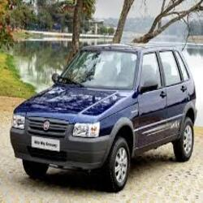

Marca / Ano
Dodge / 2023
om mais de 800 cavalos, o Dodge Demon é um verdadeiro monstro das pistas. Criado para dominar as arrancadas, esse muscle car entrega adrenalina pura e uma presença intimidadora nas ruas.

Marca / Ano
Porsche / 2022
O Porsche 911 GT3 RS é engenharia alemã em seu ápice. Pensado para pistas, mas legalizado para as ruas, oferece controle cirúrgico e um ronco que arrepia os amantes da velocidade.

Marca / Ano
BMW / 2021
O BMW M4 G82 une luxo e brutalidade em um design moderno. Com motor biturbo e tração refinada, é um esportivo que entrega desempenho com estilo e tecnologia de ponta.

Marca / Ano
Fiat / 1994
Ícone brasileiro dos anos 90, o Fiat Uno Quadrado conquistou gerações com sua simplicidade, economia e carisma. Um clássico que ainda vive nos corações (e nas ruas).
